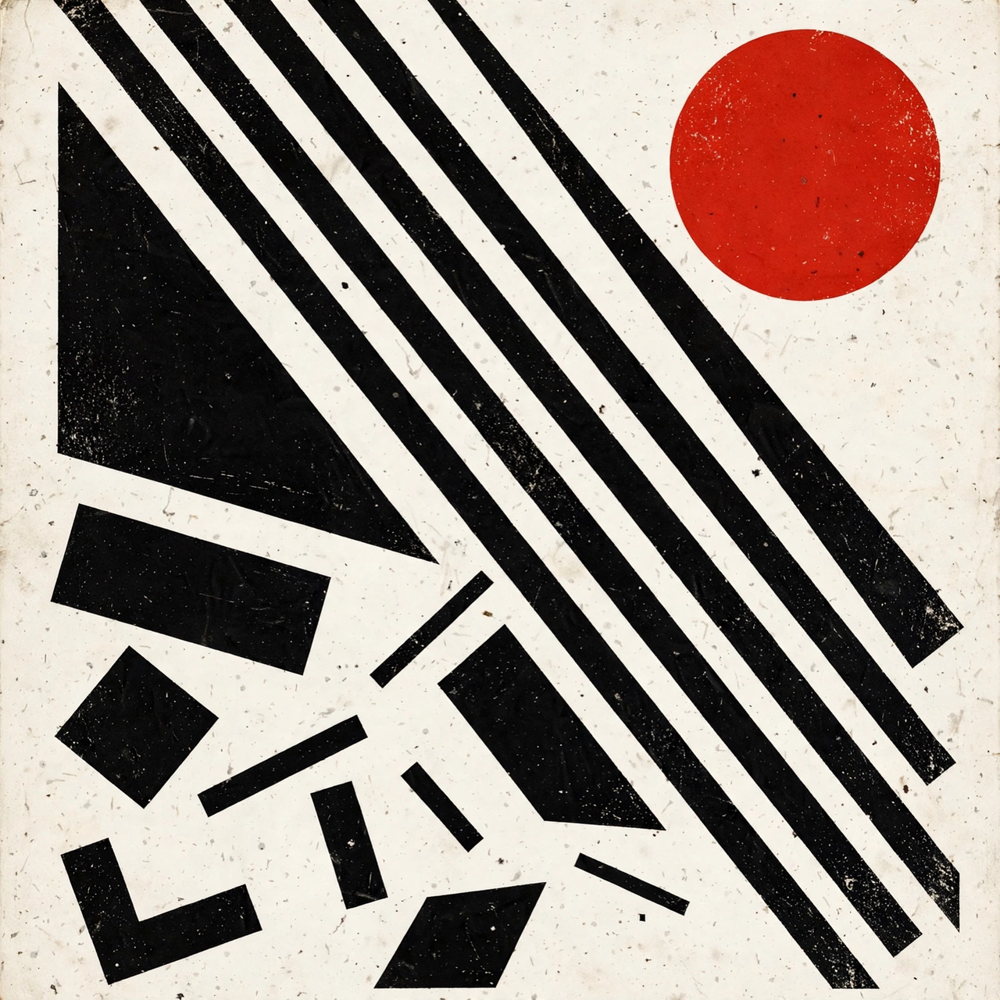

From Wikipedia, the free encyclopedia
| Constructivism | |
 | |
| Years active | c. 1913/1915 – 1940s |
|---|---|
| Country | Russia / Soviet Union |
| Key figures | Vladimir Tatlin, Alexander Rodchenko, El Lissitzky, Lyubov Popova, Varvara Stepanova, Naum Gabo |
Constructivism was an artistic and architectural philosophy that originated in Russia in the years around the First World War and the October Revolution. It rejected the idea of autonomous art in favour of art as a practice directed toward social purposes — "art into life" — and profoundly influenced modern art movements, graphic design, photography and architecture far beyond the Soviet Union.
The movement grew out of Russian Futurism and the work of Vladimir Tatlin, whose "counter-reliefs" of 1913–14 assembled industrial materials in space. After 1917 many avant-garde artists enthusiastically supported the Bolsheviks. In 1921 the First Working Group of Constructivists — including Alexander Rodchenko, Varvara Stepanova and Aleksei Gan — formally repudiated easel painting and "pure" art, proposing instead that artists work in industry, theatre, typography and architecture.
Constructivist design is characterised by geometric abstraction, photomontage, bold diagonal compositions and a restricted palette dominated by red, black and white. Rodchenko's posters and book designs, El Lissitzky's Proun compositions and his exhibition designs, and the textile and clothing designs of Popova and Stepanova became international models. In photography, constructivists favoured startling viewpoints — steep angles, bird's- and worm's-eye views — to defamiliarise the everyday.
Constructivist architecture flourished in the USSR in the 1920s and early 1930s: communal housing such as the Narkomfin Building in Moscow (Moisei Ginzburg, 1930), workers' clubs, factories and Tatlin's unbuilt Monument to the Third International (1919–20), a spiralling iron tower that became the movement's emblem. Western architects absorbed constructivist ideas through figures such as El Lissitzky and through contact with the Bauhaus and De Stijl.
Under Stalin, socialist realism became official doctrine and constructivism was suppressed in the 1930s; many of its members emigrated or were marginalised. Its legacy nonetheless runs through Swiss typography, modernist architecture, and the graphic language of the twentieth century, and interest revived strongly from the 1960s onward.